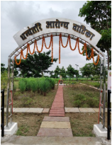
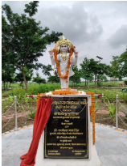

Dhanvantari Aarogya Vatika (धन्वंतरि आरोग्य वाटिका)
(Medicinal Plant Garden)
Dhanvantari, the god of medicine and health, is the divine physician in Indian tradition. He holds a special place in Ayurveda, the ancient Indian system of medicine, and is often worshipped for healing and good health. The Medicinal Plant Garden is named after Lord Dhanvantari as “Dhanvantari Arogya Vatika” and was jointly developed by the Department of Pharmacy and Department of Agriculture in 2025 under the visionary leadership of Prof. Kameshwar Nath Singh, Hon'ble Vice Chancellor, Central University of South Bihar. The garden was inaugurated by Shri Vijay Kumar Sinha, Deputy Chief Minister, Govt. of Bihar, on 31st July 2025. Currently, Dhanvantari Arogya Vatika has more than 50 species of medicinal plants with provisions to expand the number of species.
- Relevance: The establishment and maintenance of ‘Dhanvantari Arogya Vatika’ hold significant relevance in conservation, holistic health promotion and as the centre of knowledge of Medicinal plants.
- Purpose: Dhanvantari Arogya Vatika will serve the University as a “living library” that bridges traditional knowledge and modern science. It will support healthcare innovation, agricultural applications and ecological sustainability through its multifaceted utilisations in education, research, extension, training, and conservation.
-
Objectives:
- To educate students, researchers, and the rural youth community about medicinal plants and their uses in traditional and modern medicine.
- To educate the general public on the importance and safe use of medicinal plants in holistic healthcare practices, and promote traditional systems of medicine like Ayurveda, Siddha, and Unani. It provides an opportunity to support community-based health traditions and local knowledge systems.
- To demonstrate production technology, propagation methods of medicinal plants and promote their sustainable uses & biodiversity.
- To serve as a model for rural youths and entrepreneurs in medicinal plant production and commercialisation. Furthermore, to encourage the start-up potential of herbal formulations and products.